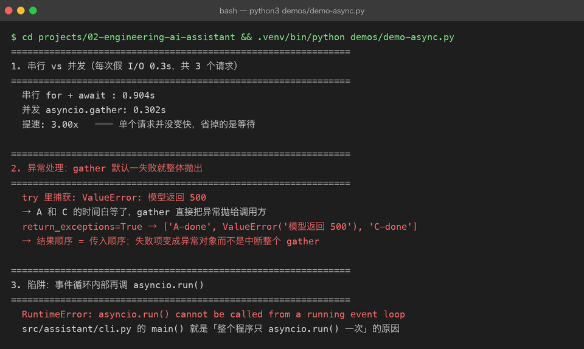
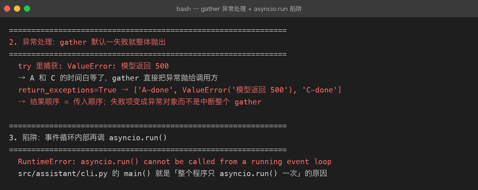

Project 02 — Chapter 01：Async / Await【异步 / 等待】
本章 ↔
src/对照（校对时补：本章概念在真实代码里的落点） -src/assistant/client.py—DeepSeekClient.chat()/.astream()是async def，await的是网络 I/O -src/assistant/cli.py—main()是整个程序唯一一次asyncio.run()（曾因调用两次导致退出时Event loop is closed） -src/assistant/service.py—AssistantService的 async 方法只依赖BaseLLMClient抽象，不关心底层是否真异步 -tests/conftest.py—FakeClient让 async 测试完全离线、零 Key
1. 项目问题
现在调用 LLM API 的代码通常是：
response = chat(messages)假设：
HTTP 请求耗时 3 秒那么当前线程可能一直等待：
开始请求
↓
等待网络
↓
等待服务器
↓
等待模型
↓
收到响应在等待期间：
当前执行路径
↓
基本无法继续处理其他任务对于 AI 应用尤其明显。
因为：
AI API 大量时间是在等待网络和模型响应。
2. 同步 vs 异步
Synchronous【同步】
任务 A
↓
等待
↓
完成
↓
任务 B
↓
等待
↓
完成Asynchronous【异步】
任务 A
↓
等待网络
──────────────┐
↓
任务 B 完成
↓
等待网络
──────────────┘注意：
异步不等于“一个请求一定更快”。
它主要解决的是：
等待 I/O【输入输出】时，不要让程序只能干等。
3. Coroutine【协程】
Python 中：
async def定义的是一个协程函数。
例如：
async def chat():
print("开始请求")
...调用：
chat()并不会像普通函数一样直接执行完毕。
通常需要：
await chat()或者：
asyncio.run(chat())4. async / await 的关系
async def chat():
result = await request_llm()
return result这里：
async def
表示：
这个函数可以以协程方式运行。
await
表示：
当前协程遇到需要等待的操作时，把执行权让出去。
可以理解为：
async def
↓
定义“可以暂停”的任务
await
↓
在这里等待 I/O，同时允许其他协程推进5. Event Loop【事件循环】
异步系统的核心之一：
Event Loop【事件循环】它负责调度：
Coroutine A
Coroutine B
Coroutine C例如：
A：等待 HTTP
↓
事件循环
↓
执行 B
B：等待 HTTP
↓
事件循环
↓
执行 C
C：完成
↓
事件循环
↓
恢复 A联系描述：
事件循环并不是同时把所有代码都执行一遍，而是在任务遇到可等待的 I/O 操作时切换到其他可运行任务，从而提高等待期间的资源利用率。
6. Project 02 的第一个重构
Project 01 中：
def chat(messages):
response = httpx.post(...)
return response.json()Project 02 开始变成：
import httpx
async def chat(messages):
async with httpx.AsyncClient() as client:
response = await client.post(
url,
json=payload,
timeout=60
)
response.raise_for_status()
return response.json()这里出现三个关键变化：
httpx.post()
↓
client.post()
普通函数
↓
async def
普通调用
↓
await7. Java 对比
你有 Java 背景，所以可以这样理解。
Java 中常见：
CompletableFuture【可完成 Future】Python 中：
Coroutine【协程】
+
async / await
+
Event Loop【事件循环】它们都可以用于组织异步任务，但运行模型并不完全相同。
不要简单记成：
Python async = Java CompletableFuture更准确的是：
两者都可以用于异步编程，但 Python
asyncio的核心抽象是协程与事件循环；Java 的CompletableFuture是 Future/CompletionStage 异步组合模型。
8. 第一个项目改造
Project 02 第一个版本：
Engineering AI Assistant v1目标：
把：
同步 LLM Client改造成：
异步 LLM Client推荐结构：
project/
├── README.md
├── milestones/
│ └── 01-async-await.md
└── src/
└── ai_assistant/
├── __init__.py
├── main.py
├── assistant.py
└── api_client.py9. 改造后的调用链
用户输入
↓
main()
↓
await assistant.chat()
↓
await api_client.chat()
↓
await HTTP Request
↓
等待网络 / LLM
↓
Event Loop 调度其他任务
↓
收到 Response
↓
返回 Assistant
↓
CLI 输出联系描述：
用户输入进入 main() 后调用异步 Assistant。Assistant 再调用异步 HTTP Client。当 HTTP 请求进入等待阶段时，当前协程可以暂停，由事件循环继续处理其他任务；网络响应到达后，协程恢复执行，解析模型响应并最终返回 CLI。
10. 为什么 AI 项目特别需要异步
因为 AI 应用中经常出现：
LLM API
Embedding API
Vector Database
Web Search
Database
File I/O
MCP Tool大量操作属于：
I/O Bound【I/O 密集型】
而不是纯计算：
CPU Bound【CPU 密集型】
例如一个 Agent：
LLM
↓
Web Search
↓
LLM
↓
Database
↓
Tool
↓
LLM等待网络的时间可能非常长。
异步能力因此会成为后面：
AI Application
RAG
Agent
MCP的重要基础。
11. 常见误区
误区 1
async = 多线程
不完全正确。
asyncio 主要是协作式异步，并不等同于创建多个线程。
误区 2
async 一定比同步快
错误。
单个请求本身不一定变快。
优势主要体现在：
并发等待 I/O 时提高整体吞吐和资源利用率。
误区 3
所有代码都应该 async
错误。
同步代码依然有合理使用场景。
应该根据任务类型决定。
12. 实战挑战
把 Project 01 的：
generate_response(messages)改造成：
async def generate_response(messages):
...然后使用：
asyncio.run(main())启动程序。
13. 第二个挑战：并发请求
实现：
问题 A → LLM
问题 B → LLM
问题 C → LLM并发发送。
核心概念：
asyncio.gather(...)目标不是追求“炫技”。
而是亲自观察：
串行
vs
并发在 I/O 等待场景下的差异。


14. 主动回忆
不要看上面的内容，回答：
Q1
为什么 AI API 调用特别适合异步？
Q2
async def 和普通 def 有什么区别？
Q3
await 到底在做什么？
Q4
Event Loop 的作用是什么？
Q5
异步是不是多线程？
Q6
为什么 async 不一定让单个请求更快？
Q7
Python asyncio 和 Java CompletableFuture 有什么相似点和区别？
15. 面试话术
可以形成这样的标准回答：
Python 的异步编程主要基于
asyncio、Coroutine【协程】和 Event Loop【事件循环】。对于 AI 应用来说，大量操作属于 I/O 密集型，例如调用 LLM API、访问数据库、调用外部工具，这些操作大量时间都在等待网络。使用async def定义协程，并通过await在等待 I/O 时挂起当前协程，可以让事件循环继续调度其他任务，从而提高并发场景下的资源利用率。它的核心价值不是让单个请求本身一定更快，而是减少 I/O 等待造成的整体阻塞。
16. 本章完成标准
必须做到：
[ ] 理解同步 / 异步
[ ] 理解 I/O Bound
[ ] 理解 Coroutine
[ ] 理解 async def
[ ] 理解 await
[ ] 理解 Event Loop
[ ] 能使用 asyncio.run()
[ ] 能使用 httpx.AsyncClient
[ ] 能将 LLM API 调用改造成异步
[ ] 能解释 Python async 与 Java CompletableFuture 的区别
[ ] 能完成一次并发请求实验17. Project 02 当前进度
Project 02 — Engineering AI Assistant
Chapter 01
Async / Await
████░░░░░░
Chapter 02
Async HTTP Client
□□□□□□□□□□
Chapter 03
Type Hints
□□□□□□□□□□
Chapter 04
Dataclass
□□□□□□□□□□
Chapter 05
Config / Environment
□□□□□□□□□□
Chapter 06
Logging
□□□□□□□□□□
Chapter 07
Testing / Debugging
□□□□□□□□□□
Chapter 08
Packaging
□□□□□□□□□□
Chapter 09
FastAPI
□□□□□□□□□□18. 本项目最终要得到什么
Project 02 结束时，你应该已经不再只是：
“会 Python。”
而应该能够说：
“我可以使用 Python 构建一个具备异步 I/O、类型约束、配置管理、日志、测试、打包和 Web API 的 AI 应用服务。”
这才是 Python Engineering【Python 工程化】 的真正目标。